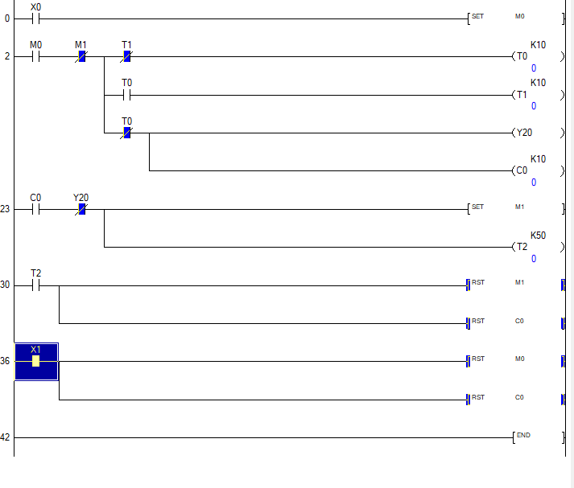
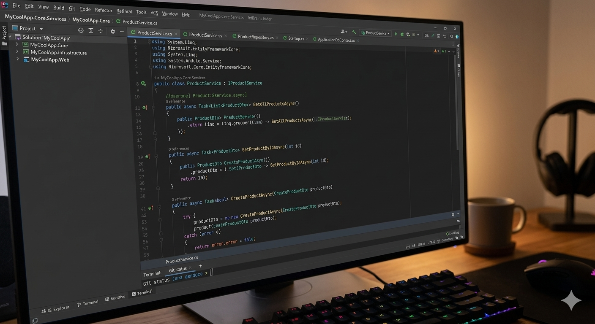
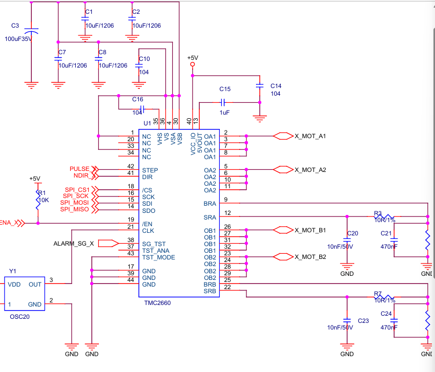
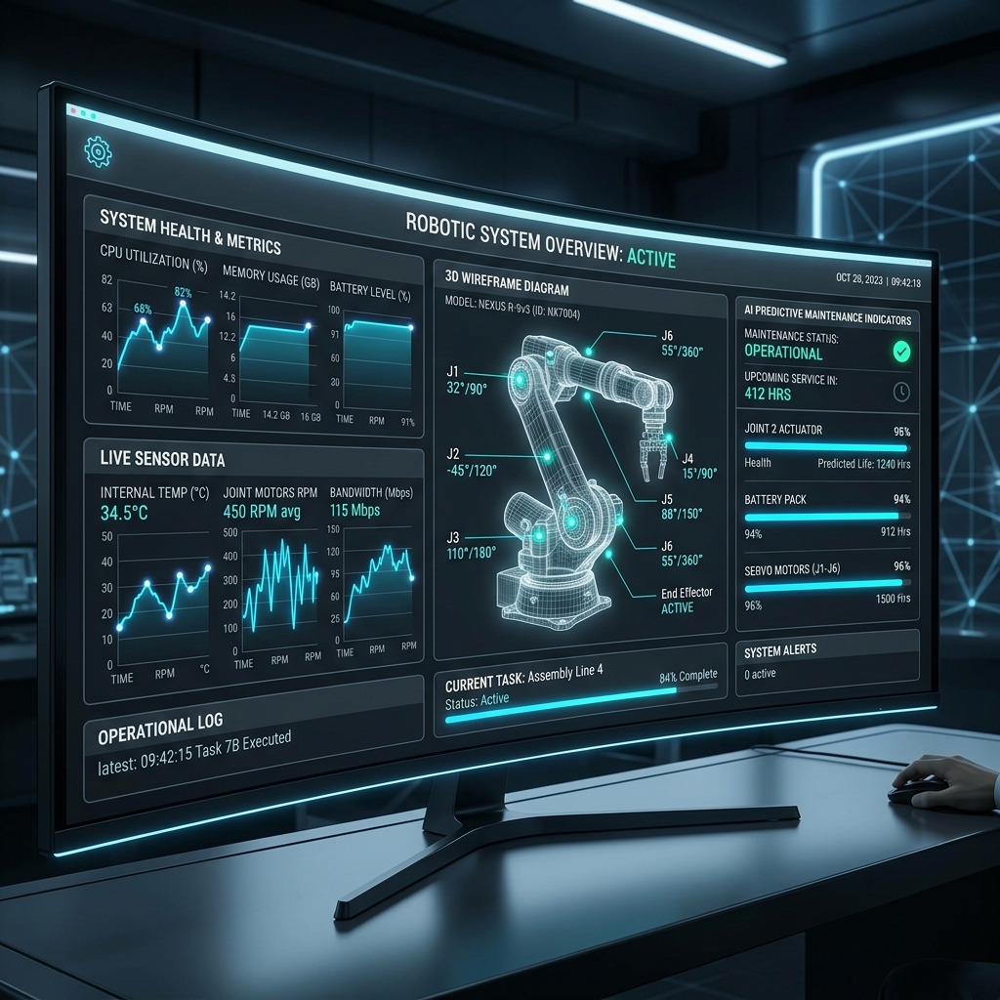
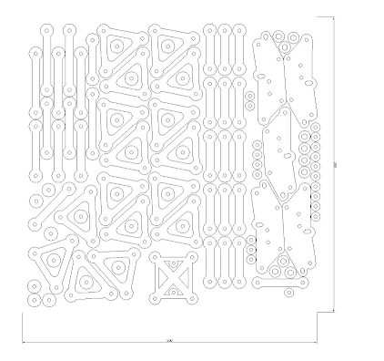
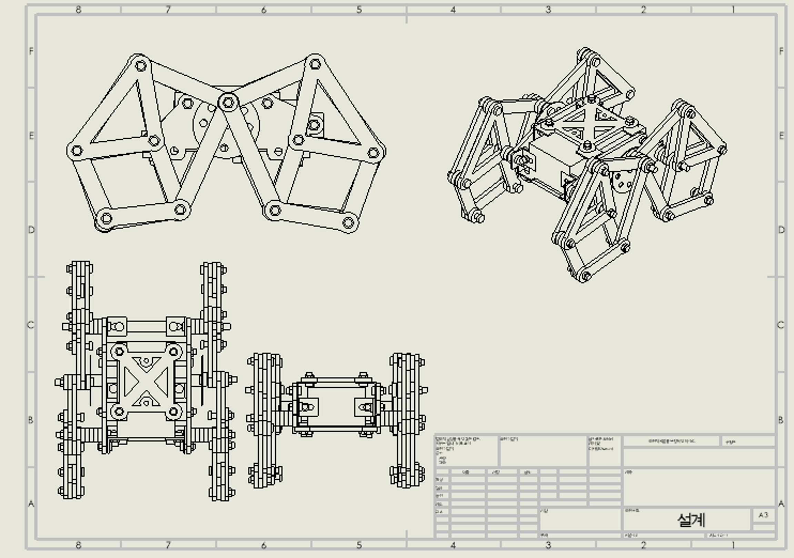
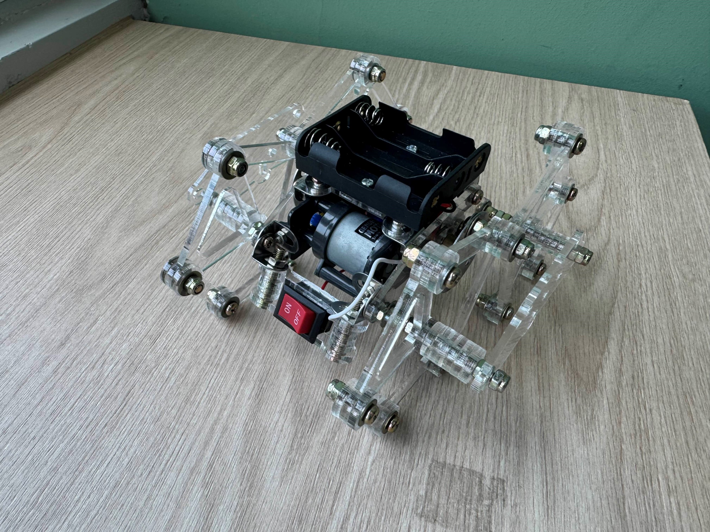

사소한 움직임도 놓치지 않는 관찰력과 사용자 중심의 탐구 태도로 AMK의 재료 혁신을 뒷받침합니다.




'" style="width:100%; height:100%; object-fit:contain; z-index:2; position:relative;">다리 끝점 하중 집중으로 인한 링크 부하 및 에너지 손실 문제 진계
삼각형 발 제거 및 직선형 링크 변형을 통한 기구학적 응력 분산 실현
점1 → 면 → 점2 순차 접지 시스템으로 타미야 기어박스 구동 효율 극대화
경진대회 우수상 수상 및 설계 데이터 대비 오차 0.1mm 미만 완결성 확보

부품 배치 최적화 및 0.1mm 단위의 정밀 가공 설계 수행

SolidWorks를 활용한 기구학적 시뮬레이션 및 하중 분산 설계

설계 데이터와 100% 일치하는 정밀 조립 및 최종 검수 완료
평촌고등학교에서의 공학적 호기심이 동양미래대학교 로봇소프트웨어과에서의 PLC & C# 제어 논리로 구체화되는 흐름입니다.
습득한 제어 기술이 테오 얀센 링크 구조 개선이라는 실질적인 성과로 폭발하는 궤적입니다.
증명된 설계 역량이 반도체 부트캠프의 몰입형 교육을 통해 산업 현장 맞춤형 전문성으로 고도화되는 과정입니다.
정제된 역량이 AMK·램리서치의 핵심 가치(Uptime 극대화)와 맞닿는 최종 선입니다.
READY FOR NEXT STEP
기술의 가치를 실현하고 함께 성장할
파트너를 찾고 계신다면, 언제든 연락 주시기 바랍니다.